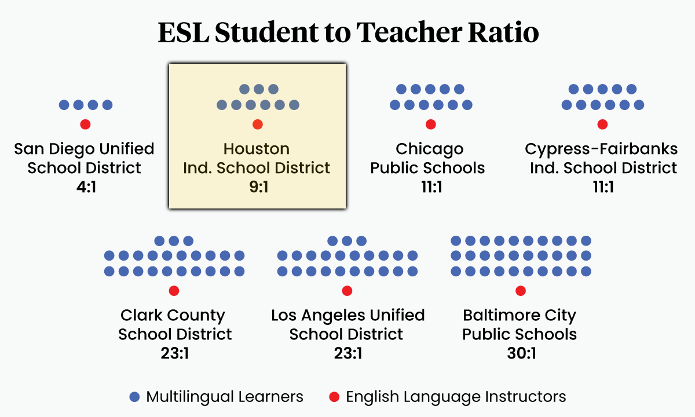

Houston ESL Statistics
Houston Independent School District (HISD):
In the 2023–2024 academic year, approximately 69,000 students in HISD—about 39% of total enrollment—were classified as English Language Learners (also called "emergent bilinguals"). These students speak a wide range of native languages, though Spanish remains the most common.
Source: Houston Landing
Houston Community College (HCC):
HCC's Adult Education and ESL programs serve a highly diverse student population. As of Fall 2024, HCC reported over 52,000 students enrolled in total, with its ESL program representing learners from 80+ countries and 30+ languages.
Source: Houston Community College
Demographics:
According to the 2022 American Community Survey, about 48.5% of Houston residents age 5 and older speak a language other than English at home.
Source: U.S. Census Bureau via Wikipedia
Visual Data
Source: The74Million.org